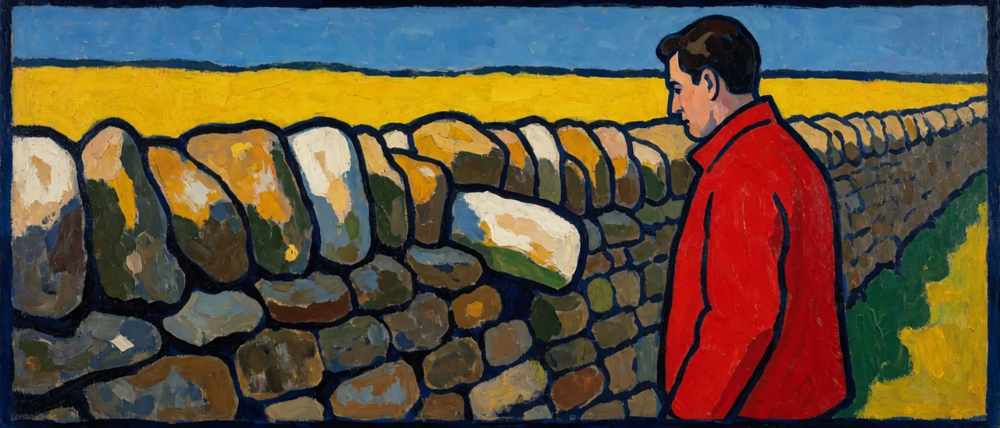

<Cognitive Axioms 05_1> split the living cognizer into three layers, but the governor is not always on, so this piece is about the sentence that switches the governor on, and about the inference that a governor, once on, puts to work.
1. The trigger sentence and myeongchal
The recognition that "we have never left the here-now, and have no way to leave it" is a powerful trigger sentence that draws the governor into activity. It voids the temporal story the handler habitually builds, the memeplex maneuver of regret about the past and anxiety about the future, and turns attention back to the one phase that can actually be observed: the here-now. Set it beside the definition of the governor in <Cognitive Axioms 05_1> and the trigger sentence turns out to be the governor's computing environment written as a single sentence. The moment you take in the sentence, the handler's space-time settings show up as settings, and that seeing is the governor at work.
Someone who wakes this governor and uses it properly is called an active living cognizer, and the core of the inference they carry out is called myeongchal (明察, literally "bright scrutiny").
Myeongchal is an expression that appears often in Laozi's Tao Te Ching, and it is distinct from three neighboring concepts. First, it differs from the Buddhist prajñā (intuitive wisdom). Prajñā is an insight reached inside a particular system of practice; myeongchal is a real-time inferential capacity that works in everyday life. Second, it is distinct from knowledge, the accumulation of the explicit. Third, it is also distinct from wisdom, the accumulation of the tacit. Knowledge and wisdom are stores of saved information; myeongchal is the act itself of running that stored information in real time and picking up the sense that something is off.

2. Myeongchal and the Intelligence Trichotomy
The Intelligence Trichotomy was set up in <Cognitive Axioms 02_3>. HI (Hard Intelligence, foundational intelligence) is the accumulation of material a purpose can draw on; SI (Soft Intelligence, selective intelligence) is the computation that filters out propositions with no information; and PI (Performance Intelligence, responsive intelligence) is the ability to hold HI and SI and draw out how strongly each contributes to achieving a purpose. PI works by abduction.
Knowledge and wisdom, which section 1 set apart from myeongchal, are stores of saved information, so they belong to HI. The sense that something is off, which myeongchal picks up, is the signal that fires when SI catches a skipped connection or a blurred boundary. Myeongchal is PI at work, running this HI and SI in real time against the purpose at hand in the here-now.
Lay this over the three layers and the positions separate. In League of Legends, the handler controlling the precision of local fights also uses HI and SI. The governor measures that precision control itself against the purpose of winning the game and controls it again, so PI's abduction runs one level up. Myeongchal is PI as it appears when the governor is awake.
We have never left the here-now, and have no way to leave it.